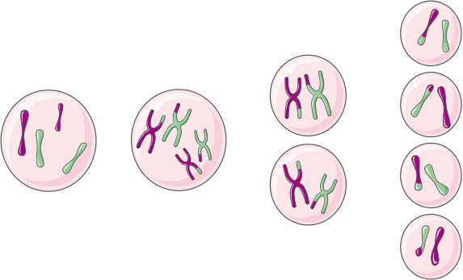
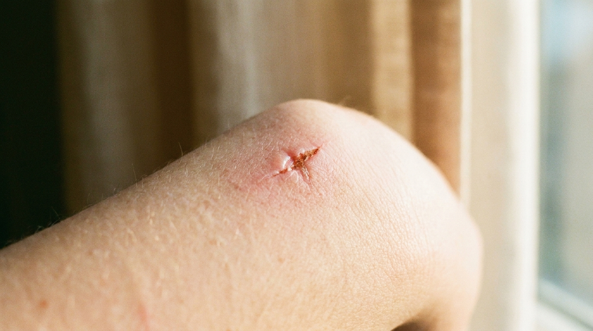
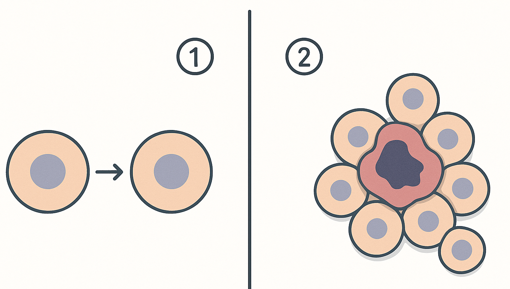

✎ Clica per editar · Ctrl+B negreta · × rosa elimina · Ctrl+Z desfés
✕
🧬
La cèl·lula viva · Sessió 3 de 4
Mateix ADN, cèl·lules diferents
Per què el cos fabrica cèl·lules noves — i de dues maneres diferents
Biologia i Geologia · 3r ESO IE Temple
✕
Amb suport visual
✕
⏱️ 2h total
✕
✕
Nom:
Data:
C
✕
🎯 Objectius d'aprenentatge d'avui
Sé que totes les meves cèl·lules tenen el mateix ADN, però cada una activa gens diferents.
Distingeixo les dues divisions: una fa filles idèntiques (créixer i reparar) i l'altra fa filles amb la meitat (cèl·lules sexuals).
Sé dir que la mitosi serveix per créixer i curar ferides.
Reconec que el càncer és una divisió que es descontrola.
✕
0
Idees prèvies ⏱️ 10 min
✕
Activa el que ja saps — no hi ha respostes dolentes
✏️ 1. Una neurona i una cèl·lula de la pell tenen el mateix ADN, però són molt diferents. Continua la frase:
Comença la frase així: «Crec que són diferents perquè…»
✏️ 2. Quan et fas un tall a la pell, al cap d'uns dies es cura. Continua la frase:
Comença la frase així: «Les cèl·lules noves surten de…»
✕
🔗
Recorda les sessions 1 i 2! Ja saps que la cèl·lula és la unitat viva i que la membrana controla què entra i surt. Avui responem una pregunta nova: com fabrica el cos cèl·lules noves, i per què en fa de dos tipus.
✕
1
Classifica les divisions ⏱️ 30 min
✕
Targetes "cèl·lula mare → 2 cèl·lules filles" — observa i classifica
El professor us reparteix 8 targetes. Cada targeta mostra una cèl·lula mare que es divideix en 2 filles. En uns casos les filles són idèntiques a la mare; en altres, les filles tenen la meitat del material. Retalla cada targeta i enganxa-la al requadre de la columna que li toca (cada requadre té la mida d'una targeta):
✕
Filles IDÈNTIQUES a la mare
enganxa una targeta
enganxa una targeta
enganxa una targeta
enganxa una targeta
✕
Filles amb LA MEITAT
enganxa una targeta
enganxa una targeta
enganxa una targeta
enganxa una targeta
✕
🤔 Després de classificar, completa les frases:
Comença la frase així: «Les filles idèntiques serveixen per…»
Comença la frase així: «Les filles amb la meitat serveixen per…»
✕
2
Per què hi ha dos tipus de divisió ⏱️ 25 min
✕
Còpies idèntiques per créixer i reparar; cèl·lules amb la meitat per reproduir-se
✕
Dos tipus
👯
Filles IGUALS a la mare → per CRÉIXER i REPARAR (mitosi)
½
Filles amb LA MEITAT→ per fer CÈL·LULES SEXUALS (meiosi)
✕
🧬 MATEIX ADN — cada cèl·lula activa gens diferents 🧬
✕
📖
Per llegir abans de continuar — tres paraules noves. L'ADN és el manual d'instruccions de la cèl·lula: hi diu com s'ha de fabricar tot. Un gen és una instrucció concreta d'aquest manual (per exemple, «fabrica aquesta proteïna»). Quan la cèl·lula es divideix, l'ADN s'empaqueta en uns bastonets que es poden veure al microscopi: són els cromosomes. Quan diem «la meitat del material», volem dir la meitat d'aquests bastonets.
✕
👯
Divisió per fer còpies idèntiques (mitosi): la cèl·lula mare es copia i fa dues filles iguals a ella, amb tot l'ADN. Serveix per créixer, reparar ferides i substituir cèl·lules que es moren cada dia.
✕
½
Divisió per fer cèl·lules sexuals (meiosi): fa cèl·lules (òvuls i espermatozoides) amb la meitat del material. Així, quan s'ajunten un òvul i un espermatozoide, el nou ésser torna a tenir la quantitat sencera, sense duplicar-se cada generació. (Ho veuràs a fons quan estudiem la reproducció.)

Il·lustració: QuiverAI (Arrow)
✕
🧠
La clau: mateix ADN, cèl·lules diferents
Totes les teves cèl·lules tenen el mateix ADN, però cada una activa només alguns gens. Una neurona activa els gens "de neurona" i una cèl·lula de la pell els "de pell". Per això són tan diferents tot i tenir el mateix manual d'instruccions. Això es diu diferenciació.
✕
Completa: La divisió que fa còpies serveix per créixer i reparar. La que fa cèl·lules amb serveix per a la reproducció.
✕

Una ferida es cura perquè les cèl·lules de la pell es divideixen i en fan de noves
✕
✅ Quina divisió és? — EXEMPLE FET Curar una ferida de la pell
El mètode: 👁️ Observo → ❓ Em pregunto → 🔗 Connecto → 💡 Dedueixo
1
👁️ Observo
Com han de ser les cèl·lules noves de la pell?
IGUALS a les altres de pell Amb la meitat
2
❓ Em pregunto
Llavors, per a què serveix aquesta divisió?
🩹 Créixer i reparar Fer cèl·lules sexuals
💡 Filles iguals → és per créixer i reparar. Aquest exemple ja està resolt: ara ho faràs tu a la Secció 3.
✕
3
Ara ho fas tu: l'òvul i el càncer ⏱️ 20 min
✕
Fes servir el mètode amb dos casos nous del teu cos
✕
👯 IGUALS = créixer i reparar · ½ MEITAT = cèl·lules sexuals
✕
🥚
Fabricar un òvul (cèl·lula sexual). El cos ha de fer un òvul per a la reproducció. Fes servir el mètode.
✕
✏️ Quina divisió és? — MARCA TU Fabricar un òvul
El mètode: 👁️ Observo → ❓ Em pregunto → 🔗 Connecto → 💡 Dedueixo
1
👁️ Observo
Com ha de ser l'òvul respecte a la mare?
Igual a la mare Amb la meitat del material
2
❓ Em pregunto
Llavors, per a què serveix aquesta divisió?
Créixer i reparar Fer cèl·lules sexuals
3
🔗 Connecto
Quina de les dues divisions has après que fa això?
La que fa filles IGUALS (mitosi) La que fa filles amb LA MEITAT (meiosi)
💡 Dedueixo
✏️ Ara escriu UNA frase sencera. Comença-la així: «Per fabricar un òvul cal la divisió que fa cèl·lules amb…»
✕
⚠️
El càncer. Normalment la cèl·lula es divideix només quan toca (per créixer o per curar una ferida) i, quan ja n'hi ha prou, s'atura. En el càncer aquest fre s'espatlla: la cèl·lula es divideix una vegada i una altra sense parar. Mira primer el dibuix i després marca:
✕

A l'esquerra, una cèl·lula normal: es divideix i s'atura. A la dreta, una cèl·lula amb càncer: no s'atura mai i se n'amunteguen moltes.
✕
✏️ El càncer — MARCA TU Divisió descontrolada
El mètode: 👁️ Observo → ❓ Em pregunto → 🔗 Connecto → 💡 Dedueixo
1
👁️ Observo
Com es divideixen les cèl·lules del càncer?
Es paren quan toca No es paren mai (sense control)
2
❓ Em pregunto
Si no es paren mai, què passa amb el nombre de cèl·lules?
Se'n fan sempre les justes Se'n fan moltes més de les que calen
3
🔗 Connecto
Aquestes cèl·lules de més, on van a parar?
Desapareixen soles S'amunteguen i fan nosa a la part del cos on són
💡 Dedueixo
✏️ Ara escriu UNA frase sencera. Comença-la així: «El càncer és perillós perquè les cèl·lules es divideixen…»
✕
🧠 Metacognició — 3 min
✕
🎯 Torna als objectius del principi — Marca el que has après avui:
✕
Sé que totes les meves cèl·lules tenen el mateix ADN, però cada una activa gens diferents.
✕
Distingeixo les dues divisions: una fa filles idèntiques i l'altra fa filles amb la meitat.
✕
Sé dir que la mitosi serveix per créixer i curar ferides.
✕
Reconec que el càncer és una divisió que es descontrola.
✕
❓
Encara em pregunto...
✕
⭐
Puntuació de la sessió
★★★★★
Encercla les estrelles que consideres
✕
📚 Tasca per a casa — per a la Sessió 4
✕
1
🩹 Investiga a casa: Pregunta a un familiar quant triga a curar-se un tall petit i un blau (morat). Anota les seves respostes i pensa: quin dels dos s'ha "reparat" fent cèl·lules noves?
✕
2
🖼️ Prepara el repte final (Sessió 4): Llegeix a Classroom l'enunciat del pòster: el cas de l'Elna, que es fa un tall al dit. Porta pensades dues coses: quin diagrama original dibuixaràs i quina experiència personal hi explicaràs. A classe no hi haurà temps de començar de zero.